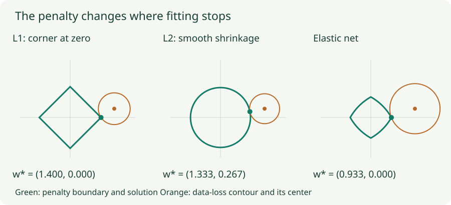

L1, L2, and Elastic Net: What the Penalty Actually Does
Derive L2 proportional shrinkage, L1 soft-thresholding, and the Elastic Net proximal operator from a single 1D quadratic model.
Adding a norm penalty to the data loss $L(w)=\frac1N\sum_{i=1}^N\ell_i(w)$ trades training fit for parameter simplicity:
Setting $\lambda_1=0$ gives squared L2 (ridge), setting $\lambda_2=0$ gives L1 (lasso), and combining both gives Elastic Net. To see why L2 shrinks every weight smoothly while L1 sets weak weights to exact zero, solve a single coordinate around its unregularized optimum $z$ with data loss $\frac12(w-z)^2$.
1. L2 penalty: proportional shrinkage
Minimize $J_{\rm L2}(w)=\frac12(w-z)^2+\frac{\lambda_2}{2}w^2$. Because both terms are smooth, set the derivative to zero:
Every coordinate is multiplied by the same constant factor $\frac{1}{1+\lambda_2}$. With $z=(2,0.4)$ and $\lambda_2=0.5$, the optimum shrinks to $(2/1.5,\,0.4/1.5)\approx(1.3333,\,0.2667)$. Because the L2 slope $\lambda_2 w$ vanishes as $w\to 0$, any nonzero $z$ stays nonzero for finite $\lambda_2$.
2. L1 penalty: soft thresholding and exact sparsity
Now minimize $J_{\rm L1}(w)=\frac12(w-z)^2+\lambda_1|w|$. Because $|w|$ has a sharp corner at $w=0$, solve it by cases:
- Case $w>0$: $|w|=w$, so $\frac{dJ_{\rm L1}}{dw}=(w-z)+\lambda_1=0\implies w^*=z-\lambda_1$, which is valid only when $z>\lambda_1$.
- Case $w<0$: $|w|=-w$, so $\frac{dJ_{\rm L1}}{dw}=(w-z)-\lambda_1=0\implies w^*=z+\lambda_1$, which is valid only when $z<-\lambda_1$.
- Case $w=0$ (the dead zone): At $w=0$, the subdifferential of $|w|$ is the interval $[-1,1]$. Zero is optimal whenever $0\in(0-z)+\lambda_1[-1,1]$, or $|z|\le\lambda_1$.
Combining all three cases yields the soft-thresholding operator $\mathcal S_{\lambda_1}(z)$:
For $z=(2,0.4)$ and $\lambda_1=0.6$, coordinate 1 shifts by $0.6$ to $1.4$, while coordinate 2 ($|0.4|\le 0.6$) becomes exactly $0$.

3. Elastic Net: threshold first, then rescale
Minimizing $J_{\rm EN}(w)=\frac12(w-z)^2+\lambda_1|w|+\frac{\lambda_2}{2}w^2$ combines both steps—subgradient condition $0\in(w-z)+\lambda_2 w+\lambda_1\partial|w|$ gives $(1+\lambda_2)w=\mathcal S_{\lambda_1}(z)$, or:
At $z=(2,0.4)$, $\lambda_1=0.6$, and $\lambda_2=0.5$, we get $w^*_{\rm EN}=(1.4/1.5,\,0)=(0.9333,\,0)$. When input features are strongly correlated, pure L1 arbitrarily picks one feature and zeros the rest, whereas the $\lambda_2$ curvature encourages correlated features to share weight (Zou & Hastie, 2005).
4. Lab: inspect the exact coordinate solutions
Exact coordinate solutions
Change the two penalty strengths and the unregularized optimum. The three curves show solved objectives, not simulated training trajectories.
5. Proximal gradient vs. raw subgradient steps
In a neural network trained with SGD, simply adding $\lambda_1|w|$ to `loss.backward()` rarely lands on exact zeros: a step $w-\eta(g\pm\lambda_1)$ overshoots across zero and oscillates around it. Proximal gradient descent (ISTA) instead takes the smooth data step $z_t=w_{t-1}-\eta\nabla L(w_{t-1})$ first, then applies the exact Elastic Net shrinkage with step-scaled thresholds $(\eta\lambda_1,\eta\lambda_2)$:
# One proximal-gradient step for smooth data loss + Elastic Net
z = weight - lr * data_gradient
weight = z.sign() * (z.abs() - lr * lambda1).clamp_min(0.0) / (1.0 + lr * lambda2)6. Structured norm penalties
| Penalty | Formula | Sparsity / structure induced |
|---|---|---|
| Element-wise L1 | $\sum_j |w_j|$ | Unstructured zero entries (needs sparse kernels for speedups). |
| Group Lasso | $\sum_g \|w_g\|_2$ | Drops entire predefined groups $w_g$ (e.g., whole channels/filters) via block threshold $(1-\tau/\|z_g\|_2)_+ z_g$. |
| Nuclear Norm | $\|W\|_* = \sum_i \sigma_i(W)$ | Soft-thresholds singular values $\sigma_i(W)$, producing low-rank weight matrices. |
7. Questions worth answering
At $w=0$, $\frac{d}{dw}(\frac12w^2)=0$, so L2’s restoring force vanishes near zero. L1 maintains a constant restoring force $\pm\lambda_1$ right up to $w=0$, trapping any coordinate whose data slope satisfies $|z|\le\lambda_1$.
Because finite step sizes $\eta\lambda_1$ step past zero on each update instead of stopping at the nonsmooth corner; the proximal operator $\mathcal S_{\eta\lambda_1}$ is needed to clamp values inside $[-\eta\lambda_1,\eta\lambda_1]$ to exact zero.
Sources
Zou and Hastie, Regularization and Variable Selection via the Elastic Net; Goodfellow, Bengio, and Courville, Deep Learning, Chapter 7.